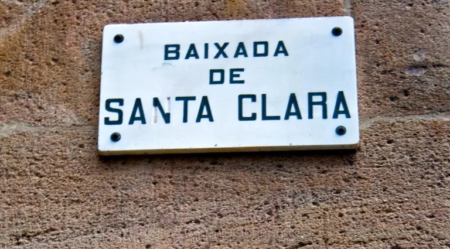

El Siguiente Estrato
Has rescatado los cimientos romanos, pero sobre Barcino se construyó una ciudad de gigantes. Barcelona es un libro cuyas páginas son muros, y cada siglo ha reescrito su verdad sobre la anterior.
Como Arqueólogo del Tiempo, tu misión ahora es ascender. Deja atrás las legiones para adentrarte en los misterios de una ciudad que creció entre reyes, sombras y secretos grabados en la piel de sus calles.
Cruza el Umbral del Tiempo

El Renacer sobre las Ruinas
Descubre cómo el medievo alzó sus palacios utilizando las mismas piedras que Lucio Minicio Natal una vez protegió.

Sombras y Linajes
Adéntrate en la red de callejones donde los gremios y las logias ocultaron mensajes que solo el tiempo ha respetado.

Cicatrices de la Eternidad
Culmina tu viaje donde el pasado más reciente se abraza con los orígenes, cerrando un círculo de mil años.
Ecos de otros Arqueólogos
"Después de conocer a Lucio, subir por los siglos del Barrio Gótico fue una experiencia mística. ¡La ciudad cobra vida!"
"Los secretos que guardan esas paredes son increíbles. Jamás volveré a mirar una piedra de Barcelona de la misma manera."
¿Estás listo para el Salto Temporal?
El Manuscrito de Piedra te reclama. Tu viaje comienza donde la antigua muralla se funde con el presente.
COMENZAR LA NUEVA MISIÓN